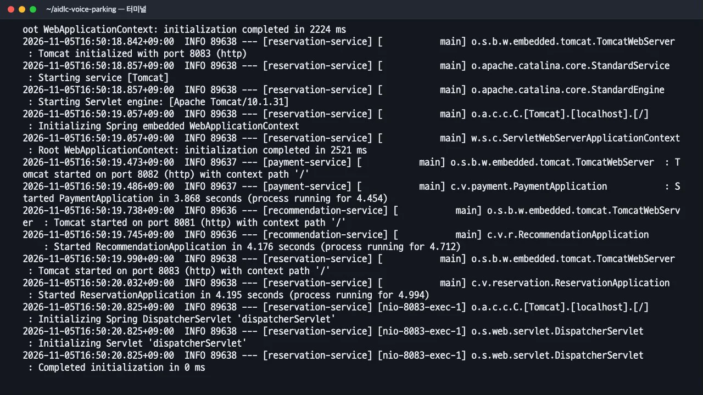
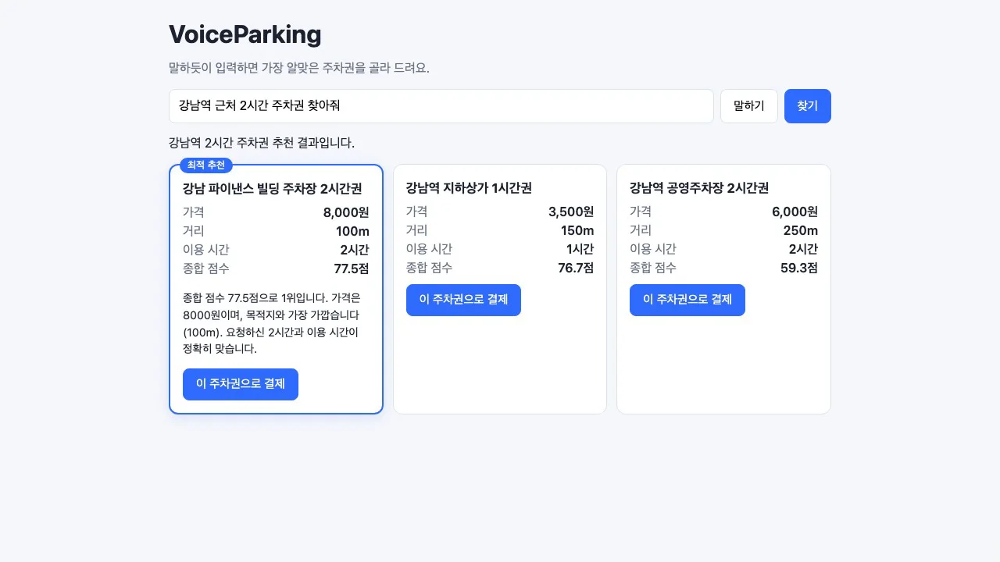
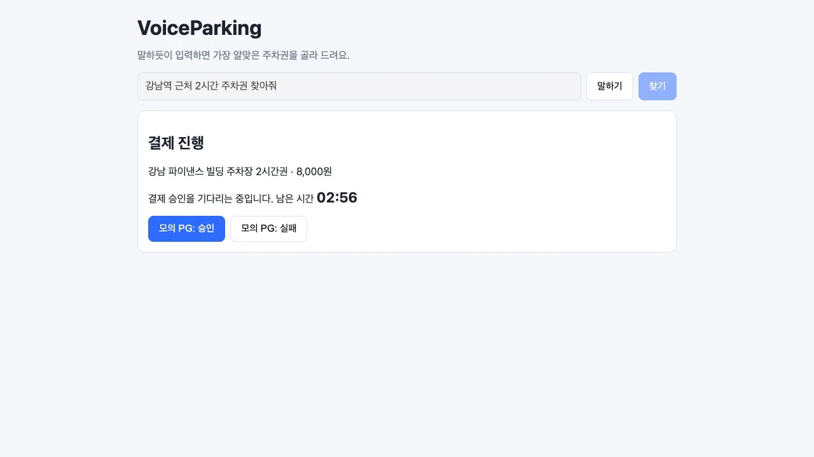
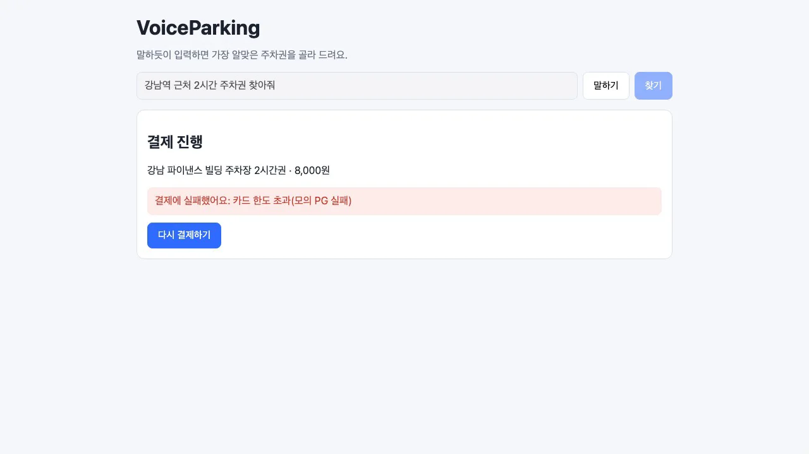
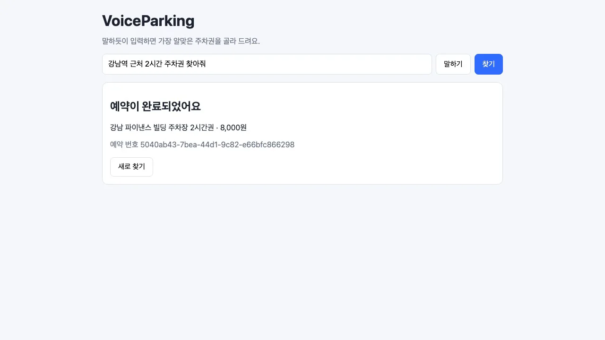
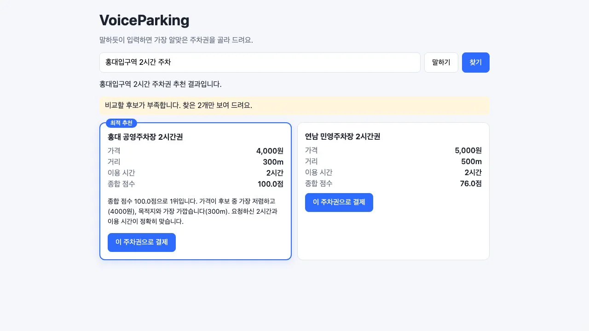
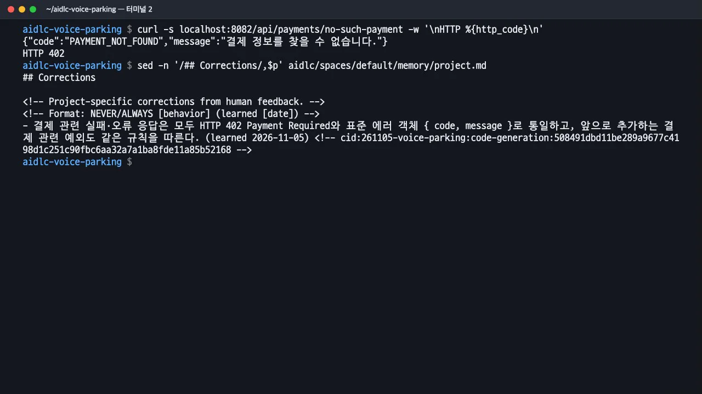
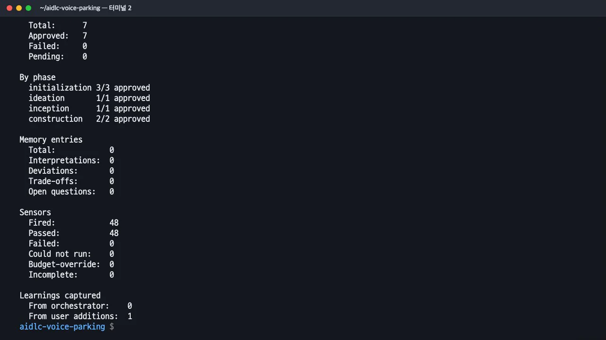
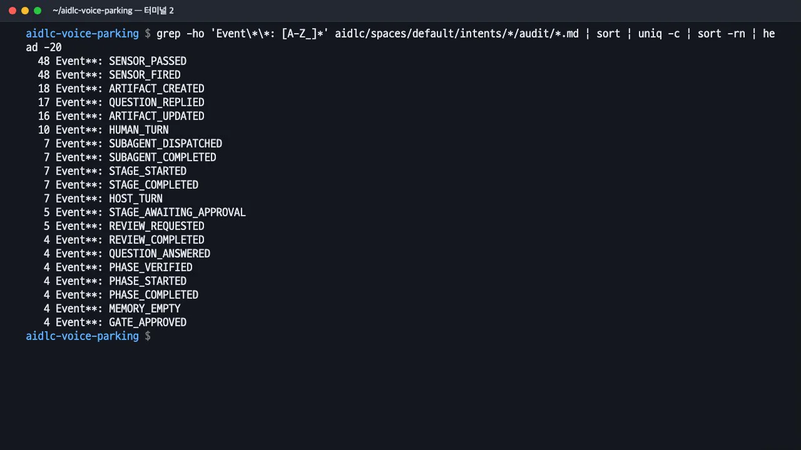

AI-DLC가 만든 VoiceParking을
run-all.sh로 띄워 브라우저에서 추천 → 결제 대기 → 실패와 재결제 → 웹훅 승인 → 예약 완료까지 직접 확인합니다. 402 오류 응답,project.md에 남은 규칙, 실행 요약과 감사 기록도 봅니다.
무엇을 · 왜#
코드 생성과 빌드·테스트는 모두 통과했지만, 두 차례 검토 모두 실제 브라우저에서 화면을 확인하는 일을 남은 작업으로 기록했습니다. 시험을 통과해도 화면 연결(실시간 알림, 결제 상태 확인, 카운트다운)은 사람이 확인해야 합니다. 이 장에서는 화면 연결을 확인하고, AI-DLC가 남긴 기록으로 누가 무엇을 승인했는지 되짚습니다.
따라 하기#
- 실행. 실습 폴더에서
run-all.sh를 실행합니다. 백엔드를 패키징하고 서비스 셋(8081 추천, 8082 결제, 8083 예약)을 실행한 뒤 Vite 개발 서버(5173)를 실행합니다. 이번에는 15초 안에 모두 실행되었습니다. 종료할 때는 Ctrl+C를 누릅니다.bash run-all.sh
run-all.sh 로 서비스 셋과 화면 서버를 띄움 - 추천. http://localhost:5173을 열고 입력창을 비운 뒤
강남역 근처 2시간 주차권 찾아줘를 입력하고 찾기를 누릅니다(입력창에는 예시 문장이 미리 들어 있습니다). 후보 3개가 나오고 1위 카드에 「최적 추천」 표시와 이유가 붙습니다. 이번 결과는 강남 파이낸스 빌딩 주차장 2시간권(8,000원, 100m, 77.5점)이었습니다. 가장 싼 곳은 아니지만 가장 가깝고 이용 시간이 정확히 맞아 1위입니다.
추천 카드 3개와 최적 추천 이유 - 결제 대기. 최적 카드의 「이 주차권으로 결제」를 누르면 예약이
PENDING상태로 생성되고 남은 시간 03:00부터 카운트다운이 시작됩니다. 요구사항에 명시한 180초 자동 취소 기능입니다.
결제 대기와 180초 카운트다운 - 실패와 재결제. 「모의 PG: 실패」를 누르면 "결제에 실패했어요: 카드 한도 초과(모의 PG 실패)"가 나오고 「다시 결제하기」가 생깁니다. 요구사항 분석 Q4에서 고른 "안내 후 같은 화면에서 재결제"입니다.

모의 PG 실패 안내와 다시 결제하기 - 승인과 예약 완료. 다시 결제한 뒤 「모의 PG: 승인」을 누릅니다. 모의 PG가 결제 서비스로 비동기 웹훅을 보냅니다. 결제 서비스가 예약 서비스에 확정을 요청하면 예약 서비스가 SSE로 화면에 알립니다. 이번 실행에서 버튼을 누른 뒤 「예약이 완료되었어요」가 보이기까지 446ms였습니다(모의 PG가 웹훅을 보내는 지연 포함).

예약 완료 화면 - 후보가 부족할 때. 「새로 찾기」 후
홍대입구역 2시간 주차를 입력하면 샘플 데이터에 후보가 2개뿐이라 "비교할 후보가 부족합니다. 찾은 2개만 보여 드려요."가 함께 나옵니다. 요구사항에서 미정으로 남겨 둔 항목을 코드 생성 계획에서 정한 대로 처리한 결과입니다.
후보 부족 안내 - 402 오류 응답. 다른 터미널에서 존재하지 않는 결제를 조회합니다. 3장에서 고쳐 달라고 한 규칙대로 HTTP 402와
{code, message}가 돌아옵니다. 그 규칙은project.md의## Corrections에 날짜와 함께 남아 있어, 이 프로젝트의 다음 작업에서도 읽습니다.curl -s localhost:8082/api/payments/no-such-payment -w '\nHTTP %{http_code}\n' # {"code":"PAYMENT_NOT_FOUND","message":"결제 정보를 찾을 수 없습니다."} # HTTP 402 sed -n '/## Corrections/,$p' aidlc/spaces/default/memory/project.md
402 응답과 project.md 의 규칙 - 실행 요약.
aidlc engine runtime summary는 모델을 호출하지 않고 기록의 수치를 집계해 보여 줍니다. 이번 작업은 60분, 스테이지 7개 모두 승인(초기화 3, 의도 정리 1, 요구사항 1, 코드 생성과 빌드·테스트 2), 센서 48회 모두 통과, 사람이 더한 학습 1건이었습니다.
aidlc engine runtime summary - 감사 기록. 감사 기록은
aidlc/spaces/default/intents/261105-voice-parking/audit/아래의 마크다운 파일입니다(가이드의audit-events.json이 아닙니다). 각 기록에는 시각, 이벤트 종류, 스테이지, 대상 파일이 포함됩니다. 종류별로 집계하면 센서, 산출물, 사람의 답, 하위 에이전트 실행, 승인 기록이 얼마나 쌓였는지 확인할 수 있습니다.수정 요청과 학습은 이렇게 남았습니다.grep -ho 'Event\*\*: [A-Z_]*' aidlc/spaces/default/intents/*/audit/*.md | sort | uniq -c | sort -rn | head -20## Rule Learned **Timestamp**: 2026-11-05T07:32:17Z **Event**: RULE_LEARNED **Stage**: code-generation **Destination**: <project-dir>/aidlc/spaces/default/memory/project.md **Heading**: ## Corrections **Source**: user_addition
감사 기록의 이벤트 종류별 개수
다음에 해 볼 것#
- workshop 스코프로 다시.
/aidlc workshop …로 시작하면 사용자 스토리, 화면, 도메인 설계, 유닛 생성, 계약 설계, 배포 계획이 더해지고, 유닛(이 실습의 서비스 셋)마다 설계와 코드 생성을 진행합니다. 가이드의 "유닛 분해" 장면이 여기서 나옵니다. 스테이지와 승인이 크게 늘어 사용량도 늘어납니다. - 팀 규칙으로 TDD.
aidlc/spaces/default/memory/team.md의 Testing Posture에 TDD를 적으면 코드 생성 단계에서 시험을 먼저 작성하게 됩니다. - 남은 검토 지적. 예약 서비스 장애 시 모의 PG 재시도 부재, 화면 폴링의 오류 처리, 내부 API 인증 부재(시연용)가 미해결 사항으로 남아 있습니다. 같은 폴더에서
/aidlc로 새 작업을 시작해 고칠 수 있고, 402 규칙은 그때도 자동으로 적용됩니다.
확인 문제#
시험 72개가 모두 통과했는데 왜 브라우저 확인이 따로 필요했나요?
시험은 서비스와 화면 컴포넌트를 따로 확인했고, 화면 전체를 잇는 App.vue의 실시간 알림·폴링 연결에는 자동 시험이 없었습니다. 검토 에이전트가 이 공백을 R-01(Major)로 짚었고, 이 장에서 브라우저로 확인해 해결했습니다.
감사 기록으로 "누가 요구사항을 승인했나"를 어떻게 찾나요?
GATE_APPROVED 기록을 찾습니다. 각 기록에 시각과 스테이지가 있고, 바로 앞의 HUMAN_TURN이 사람이 실제로 답한 대화 차례입니다. 수정 요청은 GATE_REJECTED, 저장된 규칙은 RULE_LEARNED로 남습니다.